对数学家而言，还有比以自己名字命名的数字更高的荣誉吗？莱昂哈德·欧拉（Leonhard Euler，发音为“oiler”）是18世纪的瑞士数学家，在这一章中我们将介绍了不起的欧拉数——e。
欧拉自己并没有以自己的名字命名这个数字，但他确实选择了字母e作为它的象征。历史学家对这种选择是自夸的观点持怀疑态度。欧拉是一个谦虚的天才。
欧拉数e可以用不同的方式来定义，但是我喜欢的表达式如下：
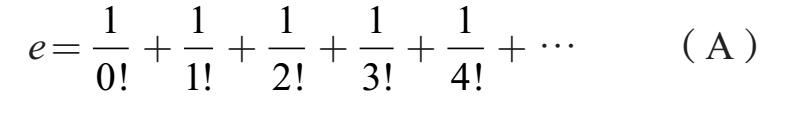
省略号表示加法永远持续下去。
（A）中的分母是阶乘（factorials）。对一个正整数n来说，n！的值是n×(n–1)×(n–2)×…×2×1。例如，4！=4×3×2×1=24。另外，0！被定义为1；这个（更多关于阶乘函数）将在第10章中讨论。
尽管这个表达式中有无限多的项，但其值是有限的，并且只需相当少的项就能得到e的高度准1 确的近似值。例如，如果我们只计算到
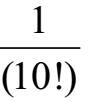
这项的和，长远来看，我们发现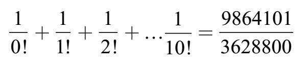
=2.71828180114638…
这与实际值2.71828182845904…非常接近。
欧拉数在数学中无处不在。在这一章中，我们会提出三个不同的问题，每个问题的解决方案都涉及欧拉了不起的数字e。
不幸的是，没有一个简单的方法来表达e。尤其是，e不是一个有理数——见第4章。像π一样，它是一个超越数；见[1]。
银行推出一种十年期定期存款产品，在产品到期后，收益将比本金翻一番。也就是说，如果你今天存入1000美元，到期后银行会给你2000美元。投资得到了100%的增长。银行为这个存款产品每年支付10%的利率是合理的（因为十年后要支付100%的利息）。
为了促成交易，银行可以在第十年结束前支付利率并将收益重新投到定期存款中。让我们看看如果银行在每年年底支付10%的利率，然后再将利息投入本金会发生什么。
从1000美元开始：在第一年结束时，储蓄存款已经获得了100美元的利息，所以存款额的价格现在是1100美元。现在这个较大的数额在第二年产生了新的收益。因此，在第二年年底，不再增加100美元，而是将1100美元的10%（即110美元）加到账户上。所以账户的金额现在是1210美元。第三年结束时，银行又将总额的10%作为利息打入账户。让我们来看看这个利息是如何配置的，以及余额如何增长：
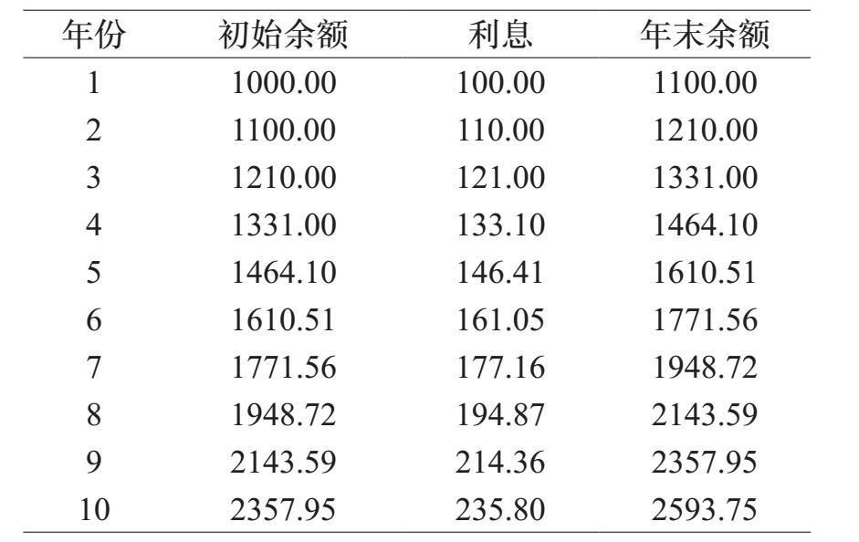
余额每年增长10%。如果一年的初始金额是A，那么年末余额是1.1×A，所以两年的增长可以表示为1.1×1.1×A。这样推导出来，存款到期后总共获得的收益是：
我们在这里计算的值与之前计算的值之间存在细微的差异，因为图表中的每个条目都四舍五入到币值美分。
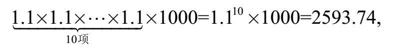
这与我们之前的计算一致。通过每年的复利，我们的资金不是增加到了两倍，而是增加更多，大约是2.6倍。
如果银行的复利按季度而不是年度，会发生什么？由于定期存款的利率是每年10%，季度付款应该是余额的2.5%。所以在第一季度，我们最初的1000美元投资增长了2.5%，即0.025×1000，为25美元。第一季度末，我们有1025美元。这相当于我们的余额乘以1.025。
第二季度，我们的1025美元账户又增长了2.5%，再增加25.63美元，达到1050.63美元，或者相当于1025×1.025=1050.63（四舍五入到美分）。
N个季度后，我们最初的1000美元变为
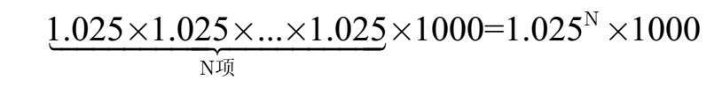
为了计算十年后我们账户内的金额，我们在这个公式中（因为在十年内有四十个季度）取N=40，发现存款到期时的余额为2685.06美元。
单利使我们的钱翻倍。年度复利可以使存款增长2.59倍，季度复利可以使存款增长2.69倍。如果银行的复利按月发放会发生什么？按每天呢？
对于每月的复利，银行每个月使存款增加了10%÷12。在代数上，如果月初时账户的余额是A，那么在月末账户余额为：
在第一个月，银行将支付1 000美元的1 0%÷12=0.8333%，即约8.33美元。所以新的余额是1.00833× 1000 = 1008.33美元。
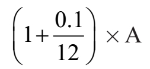
N个月后，定期存款的金额是
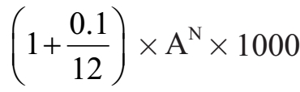
如果我们用N=120代替（因为十年内有120个月），到期后余额为2707.04美元。
一年中的天数是不同的（因为有闰年）。为了简化每日复利的计算，我们假设每年有365天。如果我们的银行每天加息，我们账户存款每天的利率是10%÷365。N天后，定期存款的余额是：
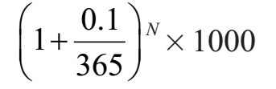
取N=3650，到期时为2717.91美元。
但是为什么要等到一天结束才能要求得到我们的利益呢？如果银行按每小时付息，该怎么办？……按每一分钟呢？……按每一秒呢？
这说明了一年的真实长度与365天有点不同。
一年有31,556,926秒，所以十年后的复利是
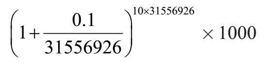
等于2718.28美元。
让我们用一个图表总结我们的计算：
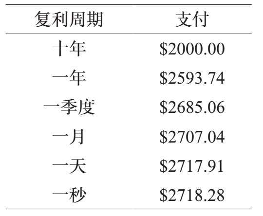
为什么在秒处停下？银行可能会选择每十分之一秒或每毫秒或纳秒付息，但是在几分之一秒内付息几乎不会改变净收益。付息保持为2718.28美元（但我们忽视的几分之一美分确实发生轻微的改变）。
在极限中，我们得出了连续复利的概念。如果银行一点点地支付利息的话，确切的回报就是1000×e美元！
连续复利是指数式增长（exponential growth）的一个例子。设A是物质的初始量（金钱、微生物等），物质在一段时间t内以速率r增长。如果新产生的物质也在产生的瞬间开始生长（速率也为r），那么当这段时间结束时，物质的总量为
Aert
这里e是欧拉数。在我们的例子中，A=1000（初始存款），r=0.1（利率），t=10（十年），所以期末余额为1000×e。
同样，物质可以呈指数衰减。如果我们以A代表物质的初始量，r代表衰变的速率，t代表时间，那么到期后物质的量就是Ae–rt。
一个指数衰减的好例子产生于碳14年代测定法。该公式用于通过测量存在的碳14的相对量来计算化石的年龄。
在很久以前，戏剧观众会戴着帽子观看演出，当到达剧院时存起他们的帽子。演出结束后，他们将拿回自己的帽子。
有一次，衣帽间管理员——也许有点醉，或者天生就是精神错乱——在观众离开的时候，把帽子随意还给观众。问题是：所有人都拿错帽子的概率是多少？
参见第10章讨论阶乘记号及其与计数顺序问题的关系。
让我们确保问题是准确的。有N个观众，他们排队等候拿回自己的帽子。疯狂的管理员以一些随机的顺序归还帽子。既然有N个观众，就有N！种归还帽子的顺序。我们假设这些顺序中的每一种的可能性相等。这是我们对“随机”的解释。
例如，让我们考虑N=4的情况。下面的图表显示了归还帽子的所有方式，我们用箭头标记那些所有人都拿错帽子的情况。
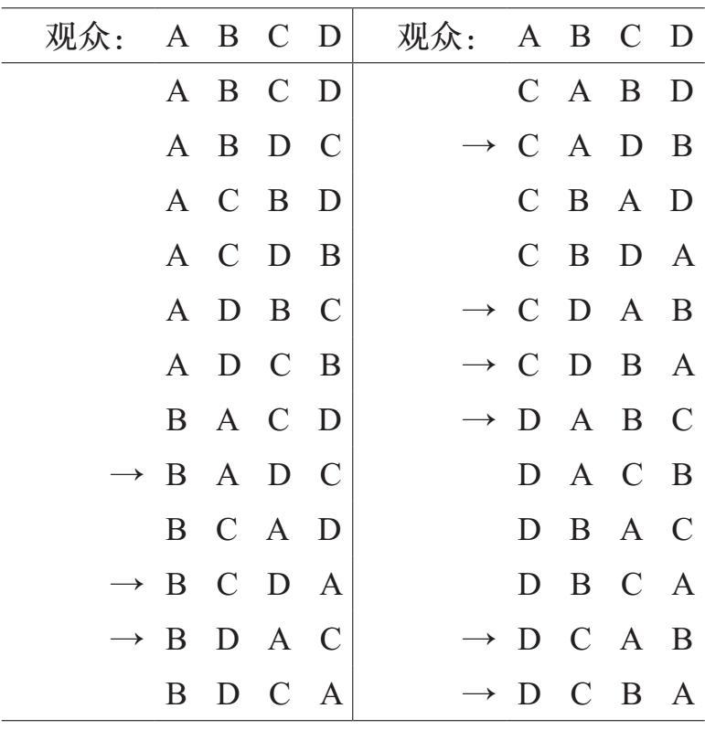
在24次发帽子的过程中，有9次所有人的帽子都是错的。所以N=4时的概率是
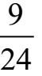
（或十进制的0.375）。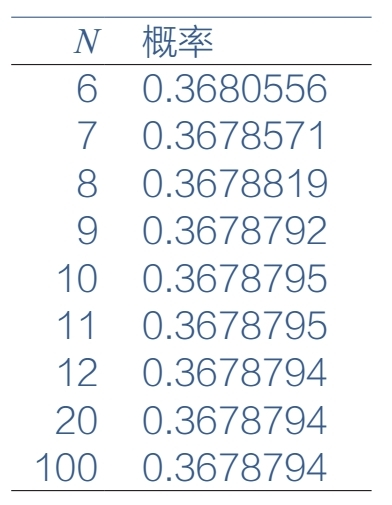
对于N=5有5!=120种不同的归还帽子的方法。其中，有44次所有人的帽子都是错的。所以，所有人都拿错帽子的概率是
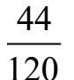
（或十进制120 的0.3666…）。左边的图表显示了N为较大值时的概率。一旦N为12，概率就会停止变化，但实际上，它确实在小数位之后略有变化。通过一些先进的分析，我们可以得出一个精确的公式，即当N个剧场观众随意得到他们的帽子时，所有人都拿错帽子的概率是精确的
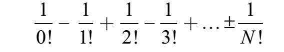
例如，当N=4时，得
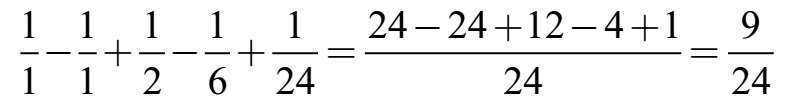
这一结果与我们之前的分析结果是一致的。
在极限中，随着N增长到无穷大，所有人都拿错帽子的概率是
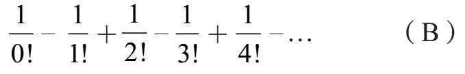
后面的项会无限继续下去。注意这个表达式与公式（A）给出的e的相似性。（B）中的和为1
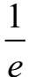
，即欧拉数的倒数！如果N=10，（B）的值正好是
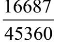
，等于10.3 0.367879188712522…，这个值非常接近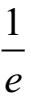
=67879441171442…。在第1章中，我们展示了无限多的质数。我们注意到，对于小的正整数，质数的出现频率很高，但是当我们转向更大的值时，质数会“变得稀疏”。我们可以通过思考连续质数之间的平均差来精确地说明质数如何变得“稀疏”。
对于那些熟悉对数的人来说：当我们考虑更大的整数时，一种衡量质数如何变得稀疏的方法是计算1和一个大整数N之间的质数。数论中的一个中心结论表明，1和N之间的质数数量约为
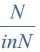
，其中lnN是N的以e为底数的对数。这个结论被称为质数定理（Prime Number Theorem）。让我们思考范围为1到20之间的质数。它们是
2，3，5，7，11，13，17和19
这些质数之间的差是
1，2，4，2，4和2
所以平均差是
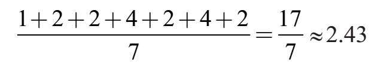
让我们来思考1到1000之间的质数的相同问题。有168个质数，以2，3，5开头，以983，991和997结束。这个范围内连续质数的平均差是
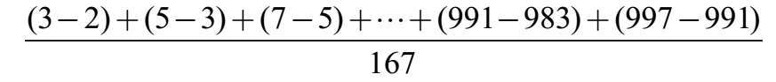
这个表达式中的分子是数学家称之为裂项求和（telescoping sum）的一个例子。想象一下由嵌套管构成的手持望远镜，望远镜折叠收起时，通过滑动使各部分重合。同样，分子中的每个项都“折叠”进下一个。所以从（3–2）到（997–991）的所有项折叠后，留下简洁的表达式（997–2）。
分母是167，因为有168个质数，所以有167个差。分子可以很容易地计算出来。请注意，第一项（3–2）中的+3在第二项（5–3）中被–3消除。同样，第二项中的+5在第三项中被（7–5）中的–5消除。实际上，括号内的每个“加”值都被下一项的“减”值消除。在我们完成所有这些消除之后，剩下的唯一项是第一项中的–2和最后一项中的+997。因此，质数在值域1到1000的平均差是
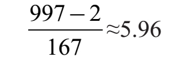
这是1到20之间的质数平均差的两倍多。
对于正整数N，让agap（N）代表1到N范围内的连续质数之间的平均差。例如，我们之前的计算可以写成：
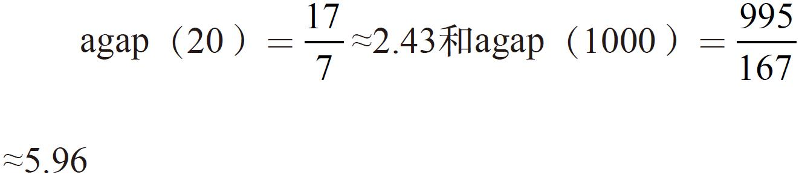
下面是一个agap（N）值的图表，N等于100，1000，10000，等等，高达10亿：
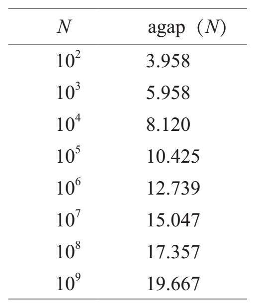
注意，每当N增加10倍时，agap（N）的值增加约2.3倍。
说明这种关系的一种方法是在广泛的N的值域内绘制agap（N）的值。在下面的图中，我们为N（在横轴上）与每个在垂直方向上相对应的agap（N）值绘制一个小星星。垂直轴具有标准间距，但水平轴采用了刻度使得每个后续标记比前一个标记大10倍。这被称为对数刻度（logarithmic scale）。
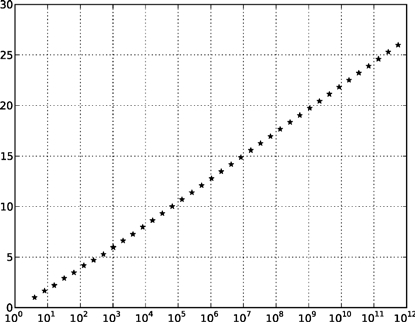
注意，星星（几乎）完全位于一条直线上。如果仔细观察，左下方稍微向上弯曲。
如果图中的星星恰好在一条直线上，那么我们就可以得到以下欧拉数的方程：
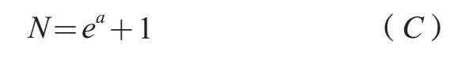
其中a是agap（N）。例如，当N=1012时，我们得出agap（N）=26.59，这与等式（C）所需得出的值a=26.63是一致的。
本章和前两章一直致力于三个奇妙的数字：π，i和e。神奇的是，这三个数字出现在一个方程中（得益于欧拉）：
eiπ+1=0
在被这个方程式的美丽和简朴震撼之后，一个焦虑的时刻就会来临：e的虚数次幂意味着什么？
我们知道e的正整数次幂是什么意思。例如，e3=e×e×e。负幂只是倒数的幂：
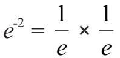
。分数幂用平方根、立方根等来解释：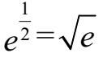
。所以甚至像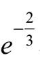
那样“可怕”的东西也可以算出来：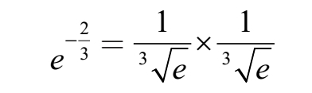
但是，eiπ似乎并不适合这个框架。我们需要另一种方法。
我们忽略了推导欧拉公式的许多步骤；我们的意图是解释e的虚数次幂的意义，并给出一个欧拉方程证明的大纲。详细证明需要一些三角函数和微积分计算，这章不涉及这些内容。
回想一下，e由方程（A）定义
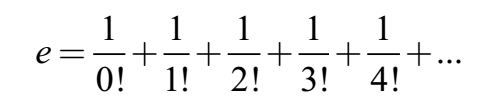
事实证明，对于任何数字x，ex的值是
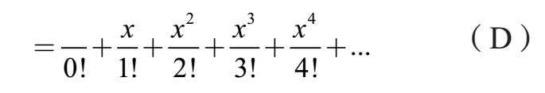
例如，如果我们取x=–1，那么方程（D）缩减为方程（B）。
为了评估eiπ，我们用（D）中的iπ代替x得到
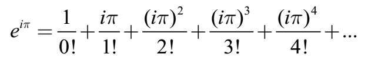
让我们仔细看看这个表达式中的分子：
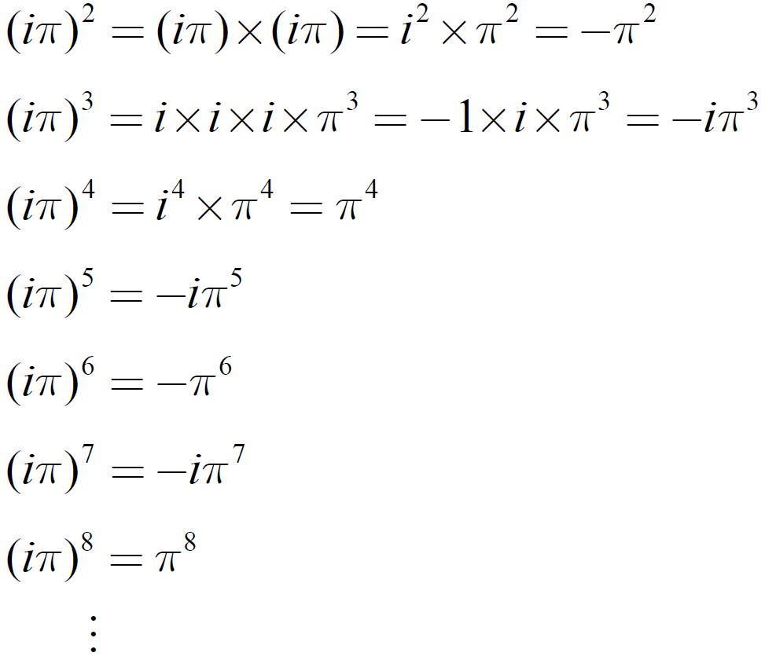
注意，这些项在实数和虚数之间交替。分别合并实数和虚数
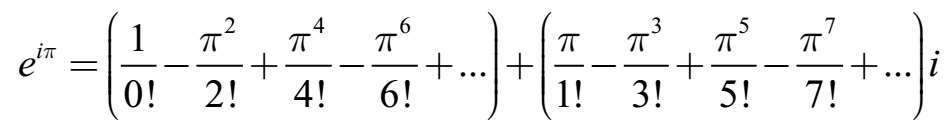
事实证明，第一个括号内的项正好是cosπ（等于–1），而第二个括号中的项是sinπ（等于0）。因此，
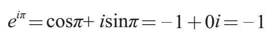
这就是欧拉神话般的公式。